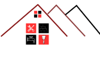
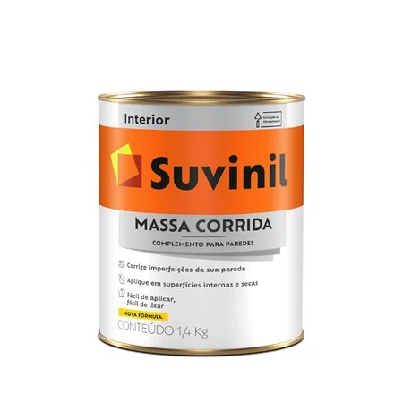

MASSA CORRIDA SUVINIL 0,9L
13,99
ENTRGA GRATIS DEPENDENDO DA LOCALIDADES
COMPRA APROVADA E SEGURA
PARCELE EM ATÉ 10X SEM JUROS
COMPRAR
Massa Corrida Suvinil 0,9L
Massa Corrida Suvinil 0,9L
A Massa Corrida Suvinil 0,9L é a solução perfeita para quem busca corrigir imperfeições e garantir um acabamento liso e uniforme em superfícies internas como paredes e tetos. Com fácil aplicação e secagem rápida, ela proporciona um resultado profissional e de alta qualidade.
Principais Benefícios:
Acabamento Perfeito: Deixa a superfície lisa e pronta para pintura.
Fácil Aplicação: Pode ser usada com espátula ou desempenadeira, de forma prática e rápida.
Alta Cobertura e Rendimento: Corrige grandes áreas com economia de produto.
Durabilidade e Resistência: Evita rachaduras e mantém a superfície impecável por mais tempo.
Secagem Rápida: Permite avançar para a pintura sem longas esperas.
Por que escolher a Suvinil?
Com a confiança de uma marca reconhecida, a Massa Corrida Suvinil oferece excelente custo-benefício, sendo ideal para pequenos projetos e reformas. Pode ser usada em alvenaria, concreto, gesso e drywall, garantindo versatilidade e qualidade em qualquer aplicação.
Seja para retoques ou grandes reformas, escolha a Massa Corrida Suvinil 0,9L e garanta superfícies perfeitas e prontas para pintura!
 1.png)